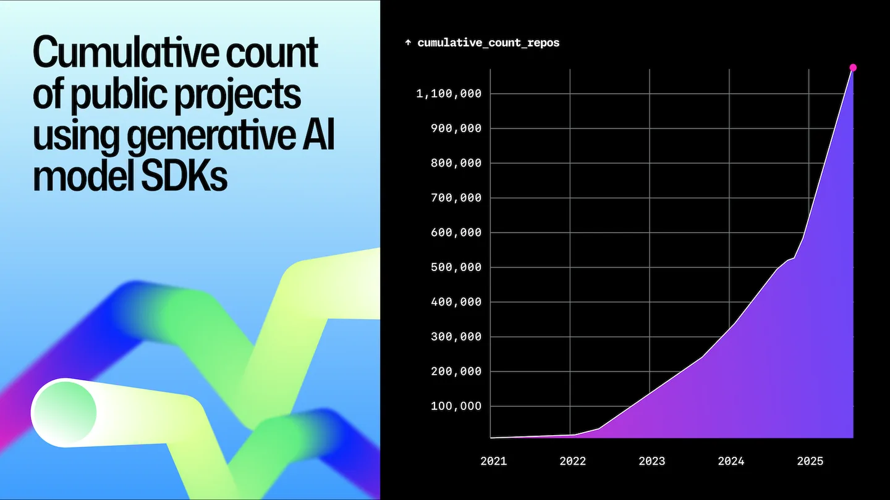

人类只是再次提升了
从接线器到 Agent，人的意图正在更高层被表达。


2026 年 5 月，Linux 和 Git 的创造者 Linus Torvalds 在一场对谈中，提到有人宣称自己 99% 的代码由 AI 编写。他随即拿编译器打了个比方：
“100% of their code is written by compilers. But they never say that.”
程序早就经过工具生成，只是过去人们不这样谈论它。他随后说，AI 正在改变编程的方式，却没有改变编程的基本问题。访谈，26:09、27:29
一个月后，Claude Code 核心建设者 Boris Cherny 在另一场访谈里，讲起自己的家庭：祖父使用穿孔卡，父亲写汇编，到了他这一代，使用 Java、JavaScript 和 Python。他说，编程的抽象层级总是在上升。Boris 访谈
而他自己的工作，也从在编辑器里写代码，变成同时运行多个 Claude，再变成编写自动运行的循环，让这些循环提示 Claude、判断下一步。他用一句话描述现在的工作：
“My job is to write loops.”
其实程序员的工作不仅仅是编码。我们不会因为机器码是编译器生成的，就认为程序员没有在 coding；同样的，在现在这个阶段，我们也不能因为代码是 AI 生成的，就认为程序员没有在 coding。
改变的从来都不是机器码或者代码是由谁写出来的，而是人编程的抽象层级。
AI Agent 带来的变化，正是人类再次提升了编程的抽象层级。我们开始把目标、约束和预期结果交给 Agent，让它把想法展开成代码，再根据运行结果继续调整。
这件事发生得很快。但如果站在历史的角度上看，软件的发展一直伴随着类似的迁移：一些原本由程序员亲手完成的工作，被新的语言或者工具接手。
截至 2025 年 8 月 31 日，GitHub 上已有超过 113 万个公开仓库引入生成式 AI 模型 SDK，同比增长 178%。[1]

要理解今天，不妨先回顾下历史。
接线器
把时钟拨回 1940 年代。那时，“写一个新程序”与“重新设置一台机器”之间，还没有今天这样清楚的分界。
早期 ENIAC 由许多功能单元组成。为了让一次加法的结果进入下一次乘法，程序员需要连接电缆、设置开关，把数学过程变成机器内部的信号路径。Computer History Museum 的记录显示，为一个新问题设计配置、接线和设定开关，可能需要许多天。Computer History Museum：ENIAC、Programming the ENIAC
.jpg){kind=link}
这张老照片里的人不是在给一份写好的软件做安装。她们设置的线路和开关，表达程序应该怎样运行。计算交给了机器，人类安排计算的过程，却依然是一项具体而繁复的手工劳动。
后来，程序开始以编码指令的形式被保存下来。1948 年，经过改造的 ENIAC 执行起存放在功能表开关中的指令；同一年，Manchester Baby 演示了保存在可写存储器中的程序。改变任务，逐渐不再意味着重新布置整台机器。[2] 人开始在一台通用的机器上，描述不同的过程。
但直接编写机器指令仍然很费力。程序员要面对操作码、地址和具体的硬件规则。汇编语言让这些数字获得了名字：用助记符表达操作，用符号标记位置，再由汇编器完成翻译。[3]
程序员仍然需要理解机器，却不必每次都亲手处理全部数字编码。机器和人的表达之间，多出了一层可以代劳的工具。
Fortran
1950 年代，John Backus 带领 IBM 团队开发 Fortran。他们想让科学和工程问题可以用公式、循环和数组来表达，把大量机器指令的生成留给编译器。项目于 1954 年启动，编译器在 1957 年推出。[4]
Fortran 团队的原始论文里，写了一个很小的故事。
一名程序员接受一天培训后，花四小时写出 47 条 Fortran 语句。IBM 704 随后用六分钟，把它们展开成约 1,000 条机器指令。第一次运行的结果不对，他根据输出改写了一条源语句，重新编译，得到了正确的答案。[5]
他估计，如果手工编码，需要三天，调试时间另算。这不是所有 Fortran 项目的统一效率，但这一次任务已经足够具体：他不必逐条写出那约一千条机器指令，也能让机器完成自己安排的计算。
而当时，对编译器的怀疑并不少。习惯手写代码的程序员担心，机器自动生成的指令不够高效。Fortran 的编译器必须在实际机器上证明自己，才能让这种更高层的表达方式被接受。[6]
人没有因此停止编程。那名程序员仍然要表达算法，也仍然要发现答案不对。变化在于，他修改的是 47 条语句中的一条，而不是重新安排下面约一千条指令的细节。
我们今天觉得理所当然的“写源码，然后编译”，曾经也是一项需要解释、需要建立信任的新工作方式。
-- 样稿节选到这里。全文后续：C & Unix · Web & Cloud · AI - 新的抽象层级 · 站在更大的尺度面前 --